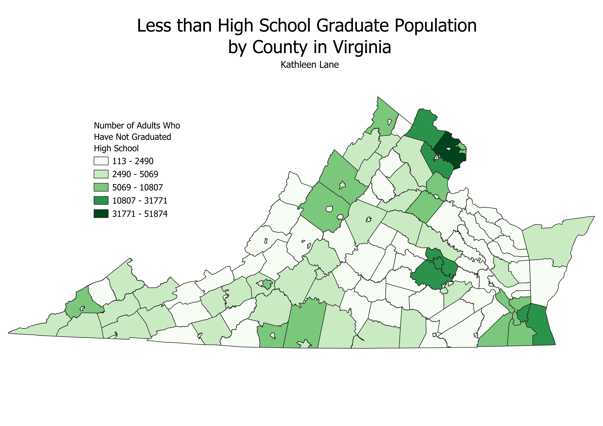

Homework 6: Census data choropleth
Kathleen Lane
Below is a choropleth of Virginia using US Census data and projected in ESRI 102746 (StatePlane VA).
This map displays the population of Virginian adults who have not graduated high school by Virginia Counties.
It is evident from the prevalence of light colors on the map that many Virginians have graduated high school.
Light green and white represent very low numbers of Virginians who haven't graduated highschool. However,
there is one dark green county in the top right portion of the state. This is Fairfax county. This area
is closer to Washington, DC, and may include some lower income families.

Data used for this project
CSV dataset
Link to VA GeoJSON Data